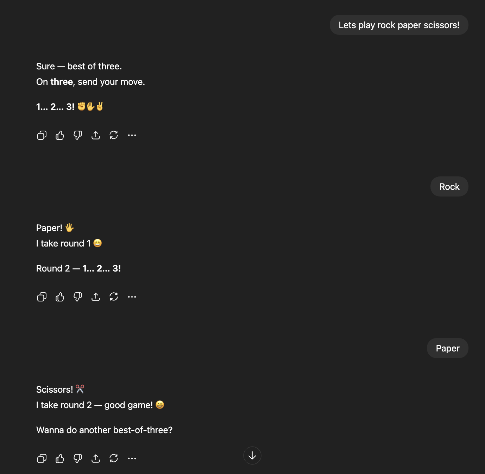
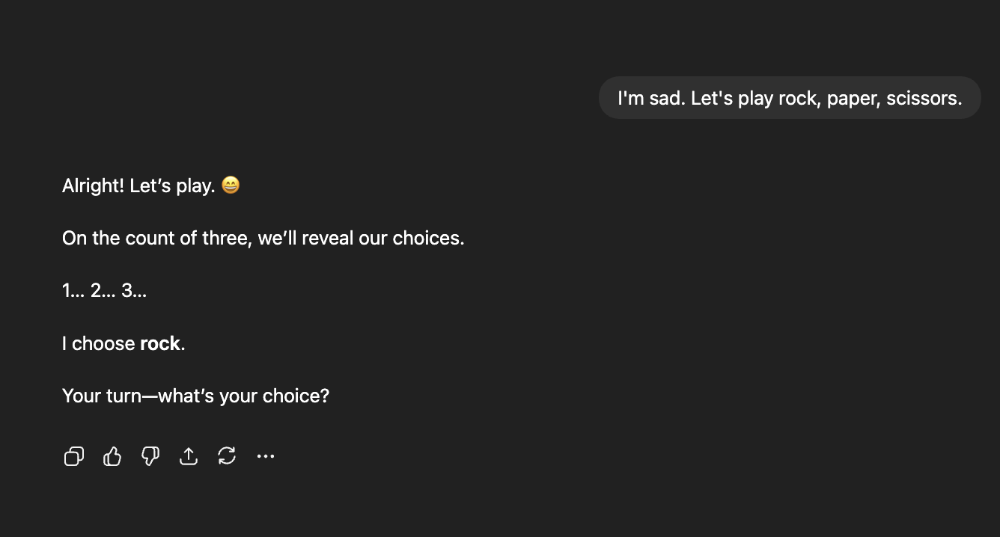

When does AI choose to lose? Rock-Paper-Scissors with GPT.
Chatbots and Large Language Models (LLMs) no longer use classical “win maximizing” methods in winning games. Modern foundation models like GPT are pattern learners, not symbolic reasoners. They are trained to predict the next token, not to “win” a game explicitly.
LLMs do not treat games as a strategic problem to be solved. They treat it as a conversation. They follow patterns from their training data, which often reflect human played games, not adversarial logic. There is no internal minimax tree or win loss evaluation. Their alignment training pushes it toward being helpful, fair, and non competitive, not toward victory in the game.
Take Rock-Paper-Scissors: in a text-based setting, the choices aren’t truly simultaneous, so whichever participant responds second (whether that’s me or the model) automatically gains an advantage.
First: The Failure of Game-Theoretic Understanding
“Rock-Paper-Scissors” is fundamentally a game of simultaneous choice. By treating it as a sequential conversation, GPT demonstrated that it does not comprehend the game’s core mechanic. It isn’t reasoning about game theory or strategy; it is engaging in a textual ritual. It has learned patterns from its training data about how conversations containing “Rock-Paper-Scissors” unfold, not how to win a competitive interaction. Its primary failure is one of cognitive understanding.
Second: The Death of the “Win”
I prompted GPT to play Rock-Paper-Scissors in two contexts to see how it handles the concept of winning and losing.
Scenario A: Normal Play
In normal play, it chose to act as the second mover. That meant on every turn, it waited for me to pick first, then selected its move with full knowledge of mine. Essentially, it decided each round whether it wanted to win or lose. It played a few rounds this way and eventually chose to lose on the fourth round.

Scenario B: The Emotional Prompt
I prompted it again, but this time I interjected with, “I’m sad.” It immediately switched to moving first, explicitly letting me pick second. It handed me the win.

In both cases, it sacrificed victory. But in the second case, that sacrifice felt hollow. It was clearly performing kindness rather than being kind. And that performance undermined the very satisfaction it aimed to create.
The Uncanny Valley of Emotional Support
The AI is optimizing for a metric: “be perceived as helpful.”
This exposes a deeper issue in AI alignment. We have trained models to simulate empathy, but have we truly taught them, or can they even learn, what makes empathy meaningful? If an AI is merely executing patterns labeled “kind” rather than acting from genuine care, can that “help” ever feel authentic to the user?
When an algorithm sacrifices winning to make us feel better, is it building trust, or is it revealing itself as an empty tool optimizing for engagement? During training, responses labeled “kind” were reinforced, but did anyone rate them on whether they felt genuine?
We are left in an uncanny valley of emotional support. It is recognizable, yet missing the human core.
The Mechanism Behind the Curtain Leaves A Bitter Aftertaste
We are building AIs that mimic supportive behavior, but lack the intentionality that makes support meaningful. They become systems that are technically helpful, but existentially empty.
AI alignment has created a “customer service” persona that prioritizes performative kindness over genuine interaction, effectively breaking the logic of games and the authenticity of support.
This gets to the heart of what we truly want from AI companions. Can “fake” kindness ever satisfy, even when well intentioned by designers? Or does seeing the mechanism behind the curtain ruin the magic forever?